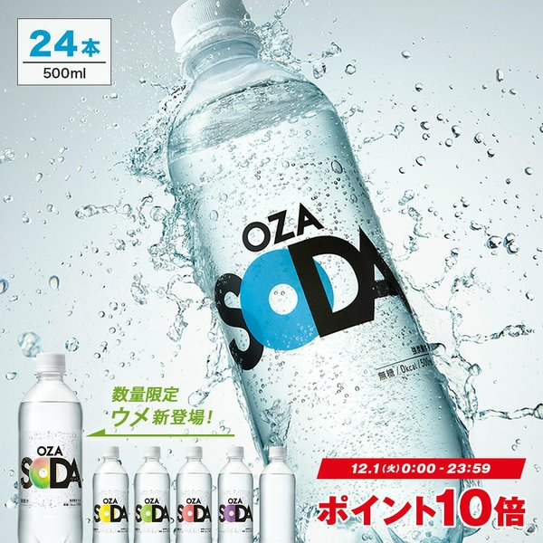
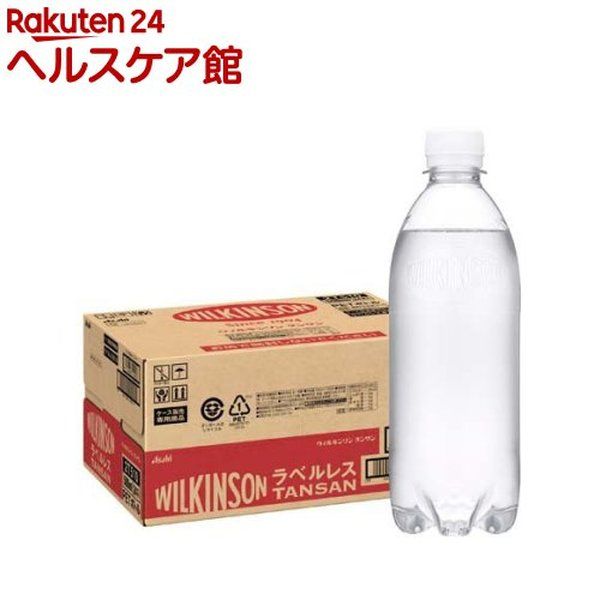
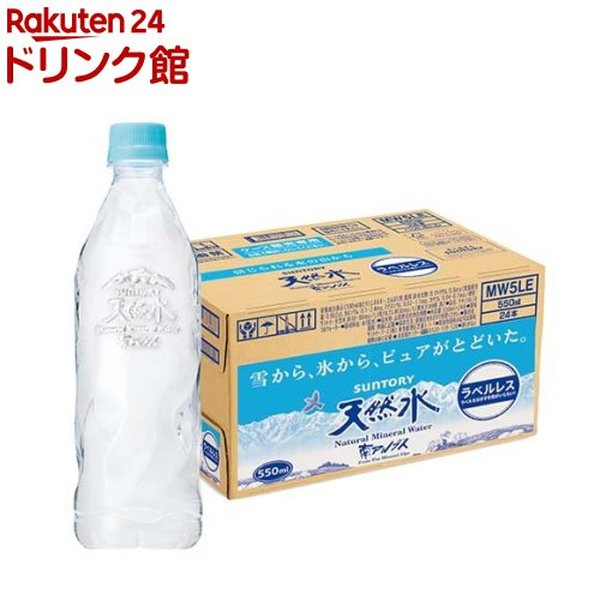
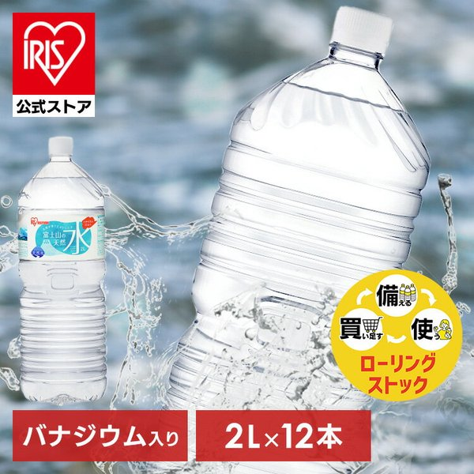
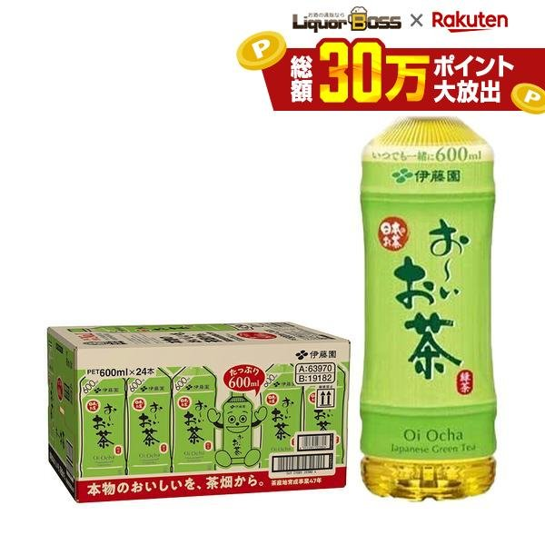
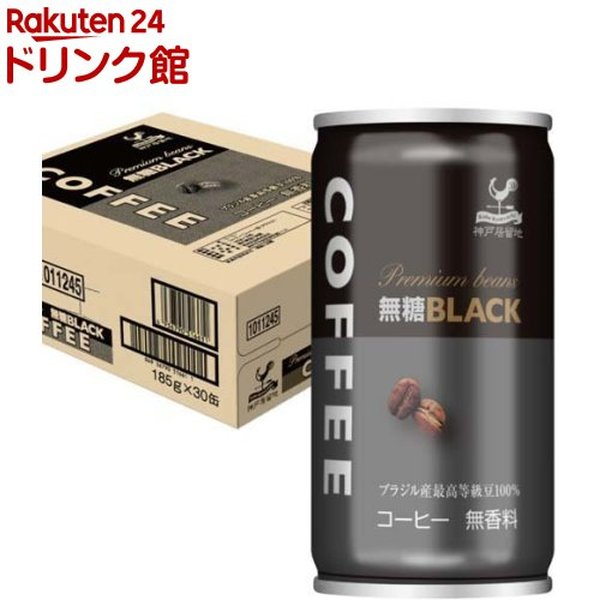
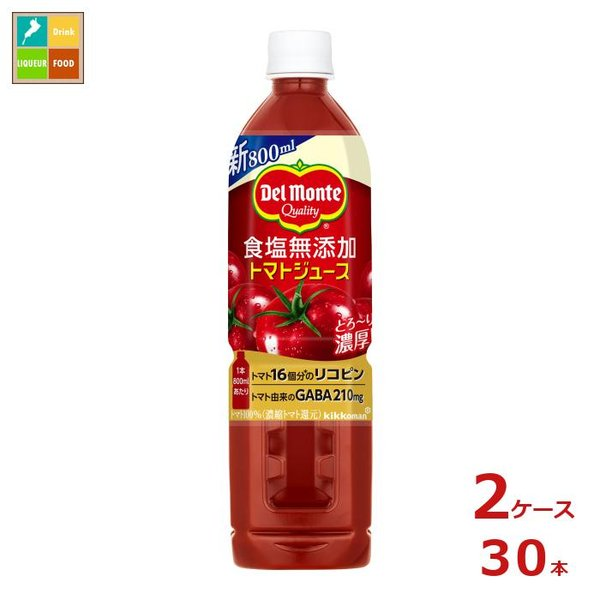
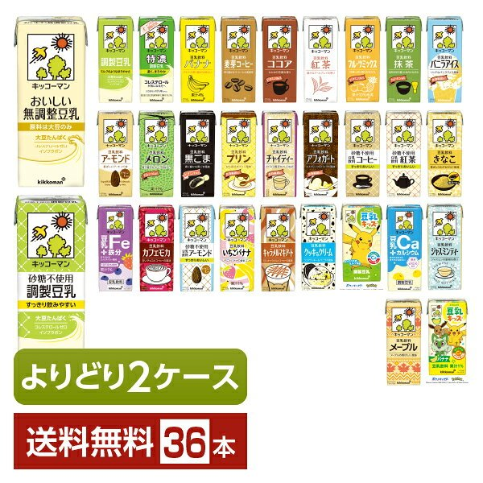
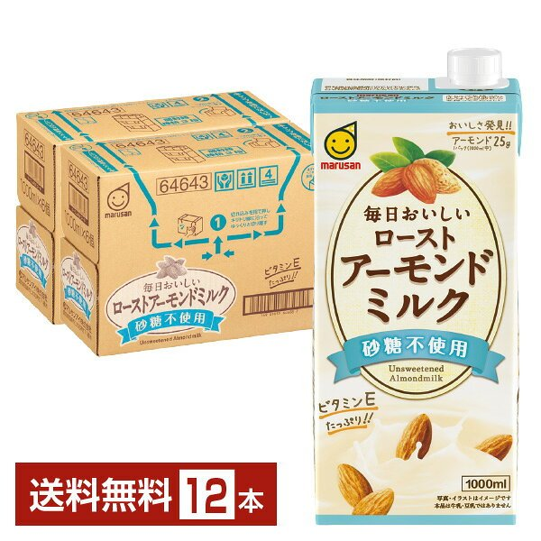
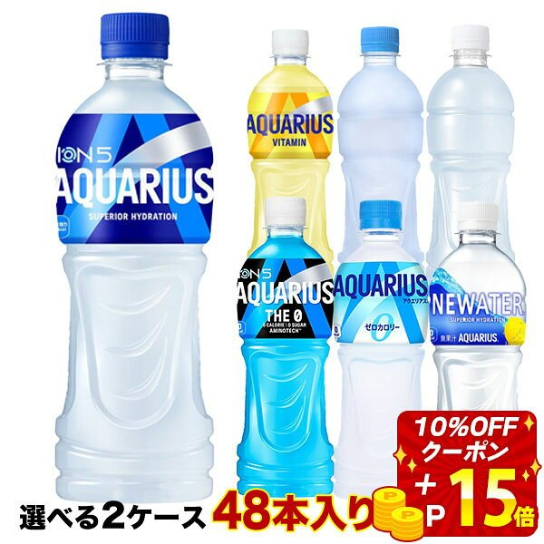

【2026年・ブラックフライデー】ケース買いで1本あたりが安い飲料10選｜強炭酸水・ラベルレス天然水・緑茶・ブラックコーヒー・トマトジュース・豆乳・アーモンドミルク・スポーツドリンクを比較
飲み物は、毎日買うからこそ値段が積み上がります。ペットボトル1本を毎日買うと、1か月で30本。ケースで買っておけば、買い物の回数もゴミ出しの回数も減らせます。
選ぶ軸は3つです。「まず1本あたりの値段」。ケースの値段を本数で割ると、同じ500mlでも差が出ます。「次にラベルレスかどうか」。ラベルをはがす手間がなく、ゴミもかさばりません。「最後に置き場所」。2Lのケースは重く、48本のケースは場所を取るので、収納を決めてから買います。なお、レビュー件数が50件に満たない商品は記事内に実数を明記しています。
本記事では、楽天市場で人気・高評価のケース買い飲料10選を、実売価格とレビュー評価つきで写真付き紹介します。
- おすすめ10選 スペック・特徴比較表
- BEST 1｜OZA SODA 強炭酸水 500ml 24本
- BEST 2｜ウィルキンソン タンサン ラベルレス 500ml 24本
- BEST 3｜サントリー 天然水 ラベルレス 550ml 24本
- BEST 4｜アイリス 富士山の天然水 2L 12本
- BEST 5｜伊藤園 お〜いお茶 緑茶 600ml 24本
- BEST 6｜神戸居留地 ブラックコーヒー 185g 30本
- BEST 7｜デルモンテ 食塩無添加トマトジュース 800ml 30本
- BEST 8｜キッコーマン 豆乳飲料 よりどりMIX 200ml 36本
- BEST 9｜マルサン ローストアーモンドミルク 砂糖不使用 1L 12本
- BEST 10｜コカ・コーラ アクエリアス 500ml 48本
- 【読者負担0円】買わなくても得する無料サービス
- まとめ：ケース買い飲料10選の選び方
| 順位 | 商品名 | ブランド | 最大の特徴・おすすめ理由 | 総合評価 |
|---|---|---|---|---|
| BEST 1 | OZA SODA 強炭酸水 500ml 24本 | OZA SODA（ライフドリンク カンパニー） | 無糖の強炭酸で割り材にも使える | 4.68 |
| BEST 2 | ウィルキンソン タンサン ラベルレス 500ml 24本 | ウィルキンソン（アサヒ飲料） | ラベルレスでゴミ出しが楽 | 4.73 |
| BEST 3 | サントリー 天然水 ラベルレス 550ml 24本 | サントリー | ラベルレスで捨てる手間が少ない | 4.74 |
| BEST 4 | アイリス 富士山の天然水 2L 12本 | アイリス（IRIS FOODS） | 2L×12本で備蓄に向く | 4.57 |
| BEST 5 | 伊藤園 お〜いお茶 緑茶 600ml 24本 | 伊藤園 | 緑茶の定番で味が安定している | 4.86 |
| BEST 6 | 神戸居留地 ブラックコーヒー 185g 30本 | 神戸居留地（富永貿易） | 無糖・無香料のブラックタイプ | 4.37 |
| BEST 7 | デルモンテ 食塩無添加トマトジュース 800ml 30本 | デルモンテ | 食塩無添加で塩分が気にならない | 4.73 |
| BEST 8 | キッコーマン 豆乳飲料 よりどりMIX 200ml 36本 | キッコーマン | 味を選べるよりどりセット | 4.77 |
| BEST 9 | マルサン ローストアーモンドミルク 砂糖不使用 1L 12本 | マルサンアイ | 砂糖不使用で甘さ控えめ | 4.88 |
| BEST 10 | コカ・コーラ アクエリアス 500ml 48本 | コカ・コーラ | 500ml×48本で家族のまとめ買いに向く | 4.73 |
OZA SODA 強炭酸水 500ml 24本

OZA SODAの強炭酸水は、500mlのペットボトル24本入りです。無糖で味のついていない炭酸水なので、そのまま飲むほか、割り材としても使えます。1ケースで1か月分の目安になり、買い足す回数を減らせます。楽天市場での実売価格は約1,429円（2026年11月時点）。
- 無糖の強炭酸で割り材にも使える
- 500ml×24本で1か月分のまとめ買い
- ケース販売の定番で口コミが多い
- 箱が大きいので、届いたあとの置き場所を先に決めておく
ウィルキンソン タンサン ラベルレス 500ml 24本

ウィルキンソンのタンサンは、ラベルを省いたラベルレスボトルの500ml×24本です。ラベルをはがす手間がなく、ゴミもかさばりません。強めの炭酸で、ハイボールやジンジャーエールの割り材にも向いています。楽天市場での実売価格は約1,999円（2026年11月時点）。
- ラベルレスでゴミ出しが楽
- 強めの炭酸で割り材にも使える
- アサヒ飲料の定番ブランド
- ラベルがないぶん、中身を間違えないよう置き場所を決めておく
サントリー 天然水 ラベルレス 550ml 24本

サントリー天然水のラベルレスは、550mlのペットボトル24本入りです。ラベルをはがす手間がなく、飲んだあとの分別も簡単。軟水でクセがなく、毎日の水分補給や子どもの水筒の補充にも使いやすい味です。楽天市場での実売価格は約2,581円（2026年11月時点）。
- ラベルレスで捨てる手間が少ない
- 軟水でクセがなく飲みやすい
- 550mlで持ち歩きにもちょうどいい
- ラベルがないので、賞味期限は箱の表示で確認する
アイリス 富士山の天然水 2L 12本

アイリスの富士山の天然水は、2Lのペットボトル12本入りです。富士山の天然水をそのままボトリングした水で、備蓄水としてローリングストックにも向いています。そのまま飲めるほか、料理や炊飯に使う水としても使えます。楽天市場での実売価格は約2,160円（2026年11月時点）。
- 2L×12本で備蓄に向く
- 箱買いでまとめて保管できる
- 料理や炊飯にも使える
- 2Lは重いので、届いたら使う場所の近くに置く
伊藤園 お〜いお茶 緑茶 600ml 24本

伊藤園のお〜いお茶は、600mlのペットボトル24本入りです。緑茶の定番で、食事にもおやつにも合わせやすい味。ケースで買うと買い足しの回数が減り、毎日飲む人のストックに向いています。楽天市場での実売価格は約2,793円（2026年11月時点）。
- 緑茶の定番で味が安定している
- 600mlで食事にも持ち歩きにも合う
- ケース買いで買い足しが減る
- レビューは84件と多くないので、味の好みは口コミを確認する
神戸居留地 ブラックコーヒー 185g 30本

神戸居留地のブラックコーヒーは、185gの缶30本入りです。無糖・無香料で、苦味と香りをそのまま楽しめるブラックタイプ。冷やしても温めても飲め、仕事の合間や朝の1本に使いやすいサイズです。楽天市場での実売価格は約2,430円（2026年11月時点）。
- 無糖・無香料のブラックタイプ
- 185gの缶で飲み切りやすい
- 30本入りで買い足しが少なく済む
- 缶なので、まとめ買いすると置き場所とゴミの量が増える
デルモンテ 食塩無添加トマトジュース 800ml 30本

デルモンテのトマトジュースは、食塩無添加の800ml×30本です。トマトの甘みと酸味をそのまま楽しめる味で、朝の1杯にも料理の下味にも使えます。食塩無添加なので、塩分を気にする人でも取り入れやすい。楽天市場での実売価格は約6,400円（2026年11月時点）。
- 食塩無添加で塩分が気にならない
- 800ml×30本で料理にも使える量
- トマトの甘みと酸味がそのまま
- 開封後は冷蔵庫で保存し、早めに飲みきる
キッコーマン 豆乳飲料 よりどりMIX 200ml 36本

キッコーマンの豆乳飲料は、200mlの紙パック36本入りです。味の違う豆乳飲料を選べるセットで、毎日飲む人のストックに向いています。200mlの小さいパックなので、朝食や間食に1本ずつ取り出せます。楽天市場での実売価格は約3,520円（2026年11月時点）。
- 味を選べるよりどりセット
- 200mlで1回に飲み切りやすい
- 36本入りでストックが長持ちする
- 紙パックなので、ストローかコップを用意する
マルサン ローストアーモンドミルク 砂糖不使用 1L 12本

マルサンのローストアーモンドミルクは、砂糖不使用の1L×12本です。ローストしたアーモンドの香ばしさがあり、そのまま飲むほか、コーヒーやシリアルに合わせても使えます。砂糖不使用なので、甘い飲み物を控えたい人に向いています。楽天市場での実売価格は約3,811円（2026年11月時点）。
- 砂糖不使用で甘さ控えめ
- ローストアーモンドの香ばしい風味
- 1L×12本で料理にも使える
- 1Lは開封後に日持ちしないので、開けたら早めに使い切る
コカ・コーラ アクエリアス 500ml 48本

アクエリアスは、コカ・コーラのスポーツドリンクです。500mlのペットボトル48本入りで、家庭で飲む分をまとめて確保できます。汗をかいたあとの水分とイオンの補給に向き、部活やレジャーの持ち出しにも使えます。楽天市場での実売価格は約4,546円（2026年11月時点）。
- 500ml×48本で家族のまとめ買いに向く
- 汗をかいたあとの水分補給に使える
- 持ち歩きやすい500mlサイズ
- 48本は置き場所を取るので、収納スペースを確認してから買う
この記事の商品を買う前に、まずは無料で得する選択肢をチェック。どれも登録・利用は0円で、無料期間中に解約すれば料金はかかりません。読みたい雑誌がある人、ポイントを貯めたい人、アンケートなら気軽という人、それぞれに合うものを選べます。
初回31日無料・無料期間中に解約すれば0円 → 楽天ポイントモール｜登録無料で毎日ポイ活
買い物なしでもポイントが貯まる無料サービス → 楽天インサイト｜アンケートに答えてポイント
登録無料・すきま時間のアンケートで貯まる → 楽天カード｜年会費永年無料
新規発行・年会費ずっと0円 →
4つのサービスの違いと使い分けは「出費0円で得する！買わずにポイントが貯まる無料サービス厳選4選」でまとめています。
💡 まとめ：ケース買い飲料10選の選び方
ケース買いは、毎日飲むものを1〜2種類に絞ると置き場所が崩れません。炭酸水ならOZA SODAとウィルキンソンのラベルレス、水ならサントリー天然水のラベルレスとアイリスの2L。食事に合わせるなら、伊藤園のお〜いお茶、神戸居留地のブラックコーヒー、デルモンテのトマトジュース。朝食向けにはキッコーマンの豆乳飲料とマルサンのアーモンドミルク、運動や外出にはアクエリアス。1本あたりの値段は、500mlの24本ケースで60円台から110円台まで幅があるので、まずは1か月でいちばん飲むものから試すと無駄になりません。
楽天市場では「5と0のつく日」や「お買い物マラソン」などのキャンペーンに合わせて購入すると、ポイント還元が最大化してお得に手に入ります。ぜひチェックしてみてくださいね。